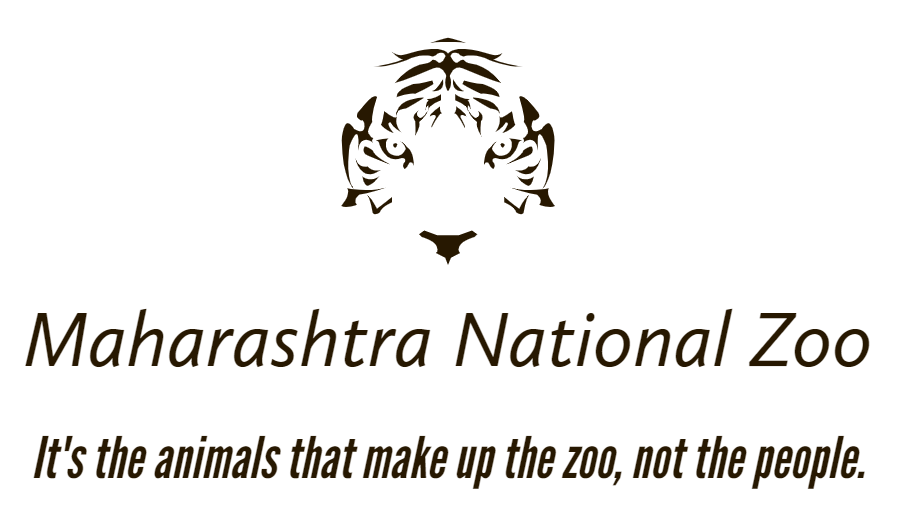

|  | |||||
| Home | About | Safari Timings | Gallery | FAQ | Contact |
About Maharashtra National Park and ZooThe Maharashtra National Park and Zoo is located about 13.5 kilometers from the city Ahemadnagar in Maharashtra.Located at the junction of the Gorakshnath gadh, this one of the finest places to view wild animals , especially as they are used to being stared at here.The park covers an area of approximately 400 sq km, and if combined with the area of Gorakshnath gadh sanctuary area, is around 500 sq km. Maharashtra National Park and Zoo is dotted with stuctures that remind you of bygone eras. There are numerous water bodies scattered all across the zoo, which provide perfect relief to the wild animals during the scorching in hot days in summers. A huge fort, after which the park is named , towers over the park a top a hill. There are many ruins of bygone eras scattered all over the jungle, which give it a uniqe, wonderful and mixed flavour of nature, history and wildlife. Tigers at Maharashtra National Zoo have been known to even hunt in full view of human visitors. |
|||||
History of Maharashtra Tiger ReserveMaharashtra National Zoo And Park is established initially as Dongargan Sita Sanctuary in 1955 by the Government of India. In 1973, it was on 1st November, while the forests located beside it were named Maharashtra Ahemadnagar Sanctuary. |
|||||
|
Maharashtra boasts being home to a large number of mammals, reptiles, and bied species. The national park in Rajasthan is bprimarilly known as the home of the Bengal Tigers . Other than this. The national park also has a rich populations of leopards, sloth bears sevaral deers species like chital (spotted deer), marsh crocodile , plan civet, jackal, desert fox, serpant eagle, waterfowl that along with others make 40 species of mammals, 35 species of reptiles and 320 species of birds. The popular wild animalsin Maharashtra includes Tigers, Leopards, Striped Hyenas, Sambar deer, chital, Nigai, common or Human langurs, Macques, Jackals, Jungle cats, Common Yellow Bats, Desert Cats, Fivested Palm, Squirels, Indian False Vampires, Indian Flying Foxes, Indian Porcupines, Longeared Hedgehogs, Ratels , Small Indian Mongoose, Small Indian Civets and Common Mongoose. The Zoo also has a large number of march crocs Reptiles, Snub Nosed marsh Crocodiles, Desert Monitor Lizards, Tortoise, Banded Kraits, Cobras, Common Kraits, Ganga Soft, Shelled Turtles, Indian Pythons, North Indian Flap Shelled Turtles, Rat Snakes, Russels Vipers, Saw-scaled Vipers and the Indian Chameleon. |
|||||
copyright © 2022. All Rights Reserved